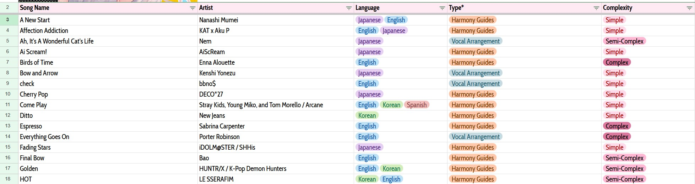
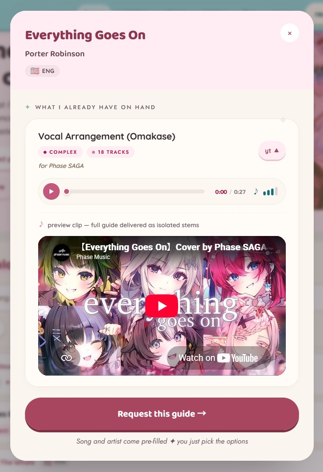
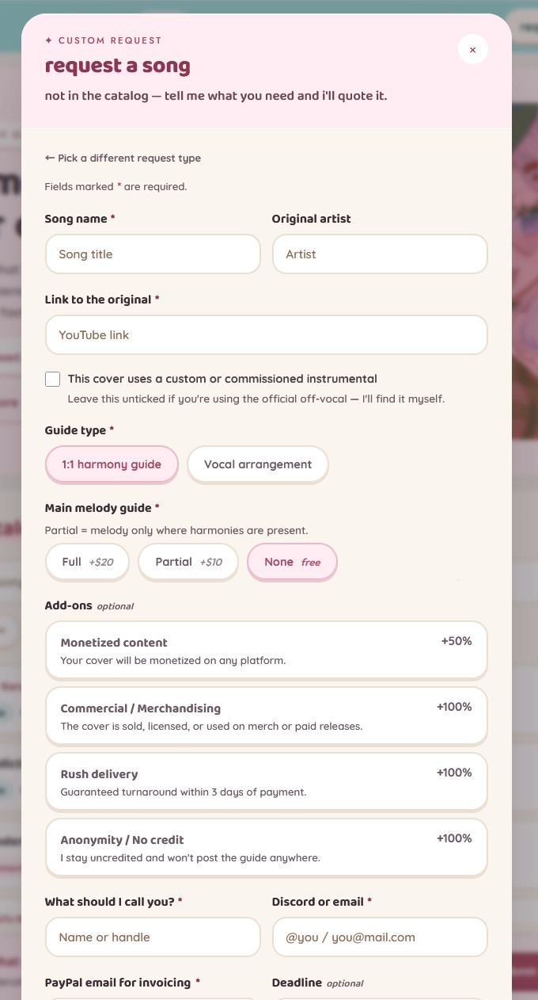

I make harmony guides and vocal arrangements for cover artists and VTubers — the isolated harmony tracks a singer learns their parts from, and the original harmonies and adlibs that make a cover sound like theirs. Most of my requests come through VGen, and for good reason. But I wanted my own front door: a site that keeps the structure VGen is good at, drops the fees it isn't, and finally makes my back catalog worth something to a client browsing it.
Context
If you commission art or music online, the default is VGen, and it's genuinely good. You get discovered there, everything lives in one place, there's a kanban board to track orders, you can list different services, payment is streamlined on both ends, and there's a middleman holding the money so the artist and the client both feel safe. For a first-time client and a working artist, that's a lot of trust to get for free.
The catch is the fees. VGen takes a 5% service fee, and then payment processing sits on top — Stripe at 2.9% + $0.30, or PayPal at its own rates, and PayPal's cut is actually higher routed through VGen than when I invoice someone directly. I price low on purpose: this is a hobbyist community and my commissions are mostly for fun and a bit of extra cash, not a wage I live on. So a percentage that looks small takes a real bite, and I've had to tack a 5% processing fee onto my quotes just to offset it — the client covers VGen, I cover payment processing.
The usual ways off the platform are worse. You can post on Twitter and hope it goes viral, then run everything through DMs and manual PayPal invoices. Or you can put a site in your bio — which only really works once you're famous enough that people are searching for you. Now that I'm a little more established, most of my discovery still comes from VGen, but I wanted a place to send returning and higher-profile clients who skip it — and to fix two things VGen structurally can't.
Role
Solo. I made the product calls, designed the interface, wrote the copy, and built and shipped the whole thing — it's a static site I hand-built and host on GitHub Pages.
Approach
I didn't want to build more than I needed, so I started by figuring out why the obvious off-the-shelf options don't fit — and only built the parts that were actually missing.
Why not just a contact email? Too open-ended. The thing I actually like about VGen is the structured intake — by the time a request reaches me, the song, the guide type, the add-ons, the deadline, and how to reach the client are all in one place, and I can quote it without a back-and-forth. An email throws all of that away. I wanted to keep the structure and lose the platform.
Why not a storefront (Gumroad / VGen Shop)? Most guide makers sell premade, ready-to-buy guides through a shop, and I wanted to sell my back catalog at a discount too — but storefronts fought me on two fronts. First, they're not flexible enough: I offer both 1:1 harmony guides and vocal arrangements, and a fixed product listing would quietly discourage someone from, say, requesting an arrangement of a song I've only ever made a harmony guide for. Second, they're built for visual goods — the listing is a photo or a video preview. Audio previews just aren't a first-class thing there, so I'd have to render my previews into videos, which is more work for me and a worse experience than an audio player that already does the job.
Why not a stem-player demo? I considered a little built-in DAW-style widget that would let a client mute and solo the tracks to hear how dense a guide is. I liked it, and I killed it. The isolated stems are the deliverable, so a previewable stem player would hand out a usable, shortened version of the thing I'm selling. On top of that, some of my guides have a genuinely absurd number of tracks, and automating a mute/solo demo for a short section of every one of them wasn't worth it. A plain audio preview gets the point across without giving the product away.
Why not a spreadsheet? I actually started this one — a Google Sheet of every guide I've made, tagged by language, type, and complexity — and then bailed on it. Sheets can sort and filter, sure, but handing a client a spreadsheet is a rough first impression: there's nowhere to preview a guide, no clean way to turn a row into an actual request, and it reads like you're poking around my database instead of browsing my work. If the catalog was going to earn its keep, it had to feel like a tool, not a tab.

So the build came down to four things VGen and the alternatives couldn't give me at once: a catalog a client can actually browse, a preview that's safe to share, an intake form as structured as VGen's, and a home for the questions I answer over and over.
What I built
A catalog that does the sales pitch for me. Every song I've already worked on lives in a searchable, filterable catalog — 69 of them so far — that you can narrow by language (English, Japanese, Spanish, Korean, Chinese), by complexity, and by guide type. The filters aren't decoration: what I have on hand is exactly what sets the discount and the turnaround. If I already have the harmony guide, I can hand it over almost instantly; if I have a vocal arrangement and you want a harmony guide, I strip the extras back out; if I have a harmony guide and you want an arrangement, I've got a running start. So catalog songs come 10–50% off depending on how much of the work is already done — and turning that into something a client can browse, instead of a discount I mention if they happen to ask, is the whole point. With school starting and less time to take fresh commissions, nudging people toward the back catalog is good for both of us.
A preview that can't be re-used as the product. Opening a song pulls up what I already have on hand — guide type, complexity, and the track count — plus an audio preview with play, mute, and a timecode, and a button that starts a request with the song and artist already filled in. The preview is deliberately a flat audio clip rather than a stem player, for the reason above: it has to demonstrate the harmony without being a usable substitute for the guide itself.

It's live, and the best way to see it is to poke at it — search a song, flip the filters, and open one to hear a preview and watch the request form pre-fill.
An intake form that asks exactly what I need to quote. The request flow splits into two paths up front — “a specific song” or “something else” for originals, collabs, and things worth talking through first — so nobody's staring at fields that don't apply to them. For a song, it collects the guide type, the main-melody-guide option (full lead vocal +$20, partial +$10, or none for free), the add-ons, a deadline, and how to reach me, and it shows arrangement-only fields like vocal range and “anything I should know about your voice” only when they're relevant. The add-ons carry their own price blurbs inline — monetized covers +50%, commercial or merch use +100%, rush +100%, staying uncredited +100% — so the pricing that used to live in my head is right there in the form. (There's also a hidden honeypot field quietly catching spam bots, since a static site has no server to do it.) By the time a request lands, I can quote it in one read — which is the exact thing I didn't want to lose by leaving VGen.

Pricing and FAQ, out loud. A pricing page lays out the floors (harmony guide from $20, vocal arrangement from $40, catalog songs 10–50% off), the add-on math, and the main-melody-guide tiers, so a quote is never a surprise — they're free and non-committal, and payment is a PayPal invoice once we've agreed, with a deposit option. And because I field the same handful of questions constantly, a proper FAQ and terms answer them up front: what you actually receive (labelled WAV stems in a zip), that you can use my vocals as a reference to learn from but not as your final track, transposition, revisions, TV-size requests, and how payment works.
Reflection
This started as a way to stop losing a cut on already-cheap hobby work, but building it made me name what I actually care about in a commissioning flow: enough structure that quoting is fast, enough transparency that a client isn't guessing at the price, and a preview that shows the work without becoming the work. That last one was the most interesting decision on the whole project — the stem player was the better demo and the worse idea, and choosing the plain audio clip meant putting protecting the deliverable ahead of the flashier build.
I'm also clear-eyed about the trade-off. Going direct means giving up VGen's discoverability and its money-holding middleman, so this doesn't replace VGen — it gives my established and higher-profile clients a faster door, while I keep VGen up for reach and link the site from my Twitter (and maybe VGen itself). Next, I want to add a proper featured-works portfolio — the one genuinely nice VGen thing I haven't rebuilt yet — and keep growing the catalog. For a project that's “just” my hobby commissions, it turned out to be the clearest example I have of designing around a real constraint: money, time, and a deliverable that's a little too easy to walk off with.